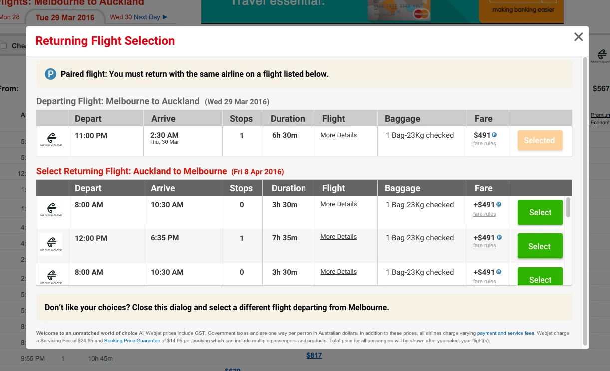

Unblocking a purchase-path dead-end
Customers who picked a paired international fare landed on a screen where every returning flight appeared unavailable. A problem the business had circled for two years with three unbuilt solutions on the table. Six prototype rounds later, people understood it.
+0.2% conversion on Hybrid Matrix, +0.4% on International Matrix — about +$500k AUD TTV per month
Read the case study